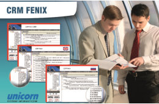

SYSTEMY UNICORN
Specjalizujemy się w projektowaniu, wdrażaniu i serwisowaniu systemów dla Lotus Notes/Domino. Zajmujemy się tym już ponad 20 lat.
-

UNI CRM Fenix
System CRM Fenix przeznaczony jest do zarządzania kontaktami z Klientami w branży inwestycyjnej. Doskonale nadaje się do pracy w układzie centrala firmy, oddziały, sieć przedstawicieli handlowych i regionalnych. System pozwala na gromadzenie informacji dotyczących firm występujących w otoczeniu użytkownika, ich pracowników, zarządzanie działaniami handlowymi, monitorowanie i zarządzanie działaniami wchodzącymi w obszar zainteresowań firmy (np. inwestycje lub projekty). Umożliwia łatwy i jednocześnie kontrolowany dostęp do informacji.
Więcej... -
UNI Workflow
System zapewnia możliwości obsługi dowolnego procesu związanego z obiegiem dokumentu lub sprawy. Zbudowaliśmy uniwersalny „silnik” workflow, do którego dołączamy dokumenty lub sprawy podlegające obiegowi. Z systemu UniWorkflow korzysta wiele firm, wykorzystując go między innymi do obsługi faktur, reklamacji, projetów, zleceń i spraw serwisowych
Więcej... -
UNI B2B
UNI B2B to nowoczesny system pozwalający na integrację dostawców i odbiorców. Obsługuje wszystkie kierunki przepływu elektronicznych dokumentów handlowych. System obsługuje różne technologie transferu dokumentów. System zawiera katalog produktów, moduł ofertowania, składanie zamówień, faktury i wiele innych funkcji. Wykorzystywane są różne metody komunikacji między systemami. System transferuje automatycznie dokumenty handlowe w postaci elektronicznej. Możliwe jest integrowanie z różnymi systemami ERP.
Więcej... -

Workflow Collaboration & Social Solutions
Rozwiązania Worflow Collaboration $ Social integrują różne systemy i platformy. Dzięki środowisku IBM Notes/Domino, Sametime i Connections możliwa jest budowa aplikacji hybrydowych łaczących w sobie wiele sposobów komunikacji i wymiany danych.
Więcej... -
UNI Portal
Masz środowisko Domino i potrzebujesz systemu intranetowego lub internetowego do publikacji informacji?Web portal to system CMS pracujący w technologii xPages
Więcej...